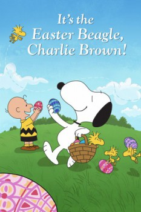

Country:United States, 25 minutes
Spoken languages:English
Genres:Family, Animation, Comedy
Director(s):Phil Roman
Writer(s):Charles M. Schulz
Video Codec:Unknown
Number: 6264

Certification:G
Storyline:
Charlie Brown, Linus and the entire Peanuts gang are off on a lively Easter egg hunt. They suspect they've spotted the Easter Bunny … but the trouble is, he looks a lot like a certain beagle who's near and dear to Charlie Brown's heart. Is it truly the Easter Bunny, or is it just the irrepressible Snoopy playing a trick on the kids?
Cast:
Todd Barbee (voice of Charlie Brown / Schroeder), Melanie Kohn (voice of Lucy van Pelt), Stephen Shea (voice of Linus van Pelt), Linda Ercoli (voice of Patricia 'Peppermint Patty' Reichardt), Lynn Mortensen (voice of Sally Brown / Violet / Frieda)
Medium: Media file,
Location: D:\Charlie Brown Cartoons\Peanuts - It's The Easter Beagle, Charlie Brown.mp4
Loaned: No
Aspect ratio: Unknown